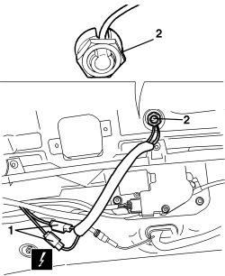
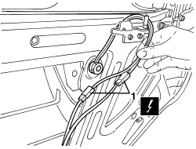
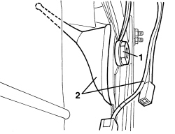

5570T61 MULTI-FUNCTION AERIAL - R.R.
- Path
- Procedures > 55 ELECTRICAL EQUIPMENT > 5570 ACCESSORIES > 5570T CAR RADIO/CAR TELEPHONE/VIDEO > 5570T61 MULTI-FUNCTION AERIAL - R.R.
- Kind
- repair procedure (removal / refitting; the operation number is the code)
- Applies to
- all engines; all production periods
- Interactive page
- https://sloeber94.github.io/elrnDB-aBrrSpdr/en/#/946004548
Applies to: all engines; all production periods
 Removing
Removing
 Refitting
Refitting- Remove the rear parcel shelf.
- For the left trim.
Op. 7040G30 BOOT LIGHT BULB HOLDER - R.R.
Op. 7050A22 REAR SEAT CUSHION - R+R
Op. 7040H42 REAR PILLAR TRIM (ONE), LEFT OR RIGHT- R.R
Op. 7040H38 CENTRE PILLAR UPPER ELEMENT (ONE), LEFT OR RIGHT - R.R
Op. 7040H30 FRONT PILLAR TRIM (ONE), LEFT OR RIGHT - R.R.
Op. 7065C34 SUN BLIND (ONE), LEFT OR RIGHT - R.R.
Op. 7040E40 FRONT COURTESY LIGHT - R.R.
Op. 7065C60 INTERIOR REAR VIEW MIRROR FOR VERSIONS WITH RAIN/DUSK SENSOR - R.R.
Or, alternatively.
Op. 7065C68 INTERIOR REAR VIEW MIRROR - R+R
Op. 7005A34 FRONT SIDE DOOR COMPARTMENT SEAL - R.R
Op. 7040H10 ROOF PANEL LINING - R.R.
- Or, alternatively
Op. 7030L12 TRANSPARENT ROOF PANEL COVER - R.R.
1. Disconnect the aerial lead connections.
Description | Connector | |
|---|---|---|
1 | AERIAL POWER SUPPLY |
2.Undo the special nut with the split washer.

Applies to: all engines; all production periods
1. Working from the roof of the vehicle, remove the aerial mounting and braid.

Applies to: all engines; all production periods
Refitting
Removing- Check that the aerial mounting is not damaged.
- Fit the braid and position the aerial mounting, then secure it from the inside using the special nut.
- Connect the connections for the aerial lead.
Op. 7040H10 ROOF PANEL LINING - R.R.
- Or, alternatively
Op. 7030L12 TRANSPARENT ROOF PANEL COVER - R.R.
Op. 7005A34 FRONT SIDE DOOR COMPARTMENT SEAL - R.R
Op. 7065C68 INTERIOR REAR VIEW MIRROR - R+R
Op. 7065C60 INTERIOR REAR VIEW MIRROR FOR VERSIONS WITH RAIN/DUSK SENSOR - R.R.
Op. 7040E40 FRONT COURTESY LIGHT - R.R.
Op. 7065C34 SUN BLIND (ONE), LEFT OR RIGHT - R.R.
Op. 7040H30 FRONT PILLAR TRIM (ONE), LEFT OR RIGHT - R.R.
Op. 7040H38 CENTRE PILLAR UPPER ELEMENT (ONE), LEFT OR RIGHT - R.R
Op. 7040H42 REAR PILLAR TRIM (ONE), LEFT OR RIGHT- R.R
Applies to: engines: 2.2 JTS, 3.2 JTS; all production periods; only with equipment: Spider
Removing
Refitting- Prepare the hood for the procedure.
Op. 0010T79 HOOD HYDRAULIC SYSTEM - DISCHARGE AND RESTORE PRESSURE
Op. 7025D12 HOOD HOUSING COMPARTMENT COVER INNER LINING - R.R.
1. Disconnect the aerial lead electrical connections.
Description | Connector | |
|---|---|---|
1 | AERIAL POWER SUPPLY |

Applies to: engines: 2.2 JTS, 3.2 JTS; all production periods; only with equipment: Spider
1. Unscrew the special nut with the split washer.
2. Remove the aerial complete with wiring.

Applies to: engines: 2.2 JTS, 3.2 JTS; all production periods
Refitting
Removing- Check that the aerial is not damaged.
- Insert the electrical cables in the port, position the aerial and secure it with the appropriate nut.
- Connect the electrical connections.
Op. 7025D12 HOOD HOUSING COMPARTMENT COVER INNER LINING - R.R.
- If discharged, restore the hood hydraulic system pressure.
Op. 7030H03 HOOD MANUAL OPENING FOLLOWING DEACTIVATION OF HYDRAULIC SYSTEM - CARRY OUT PROCEDURE
- Check that the hood is working correctly.
- Check that the GPS/GSM system is working.
Topics linked from this page (16)
- 0010T79 HOOD HYDRAULIC SYSTEM - DISCHARGE AND RESTORE PRESSURE
- 7005A34 FRONT SIDE DOOR COMPARTMENT SEAL - R.R
- 7025D12 HOOD HOUSING COMPARTMENT COVER INNER LINING - R.R.
- 7030H03 HOOD MANUAL OPENING FOLLOWING DEACTIVATION OF HYDRAULIC SYSTEM - CARRY OUT PROCEDURE
- 7030L12 TRANSPARENT ROOF PANEL COVER - R.R.
- 7040E40 FRONT COURTESY LIGHT - R.R.
- 7040G30 BOOT LIGHT BULB HOLDER - R.R.
- 7040H10 ROOF PANEL LINING - R.R.
- 7040H30 FRONT PILLAR TRIM (ONE), LEFT OR RIGHT - R.R.
- 7040H38 CENTRE PILLAR UPPER ELEMENT (ONE), LEFT OR RIGHT - R.R
- 7040H42 REAR PILLAR TRIM (ONE), LEFT OR RIGHT- R.R
- 7050A22 REAR SEAT CUSHION - R+R
- 7065C34 SUN BLIND (ONE), LEFT OR RIGHT - R.R.
- 7065C60 INTERIOR REAR VIEW MIRROR FOR VERSIONS WITH RAIN/DUSK SENSOR - R.R.
- 7065C68 INTERIOR REAR VIEW MIRROR - R+R
- P025 AERIAL FEED/AMPLIFIER